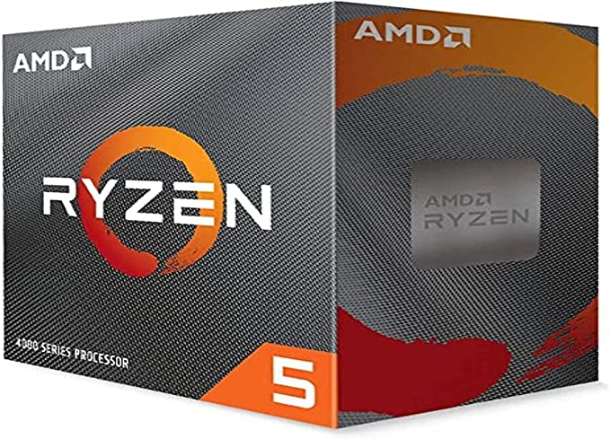
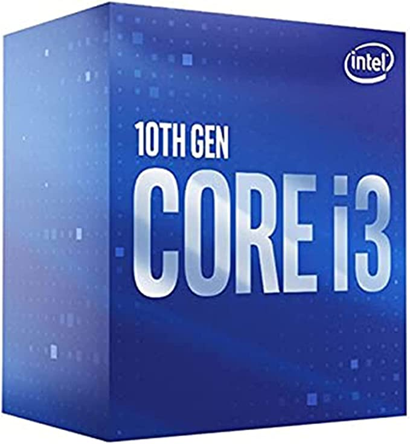
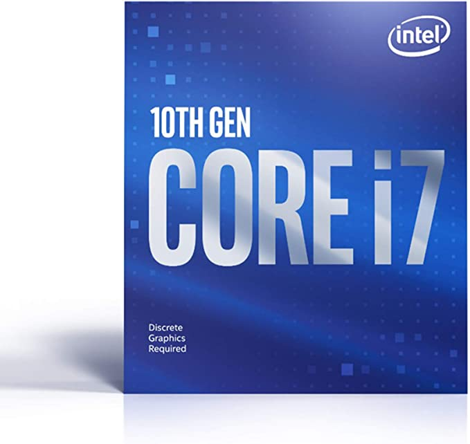

logo
logoAMD Ryzen 5 4500 6 núcleos, processador de desktop desbloqueado de 12 fios com refrigerador Wraith Stealth, Cerâmica cinza
R$630,00
PROCESSADOR INTEL CORE I3-10100F 3.60GHz (MAX TURBO 4.30GHz) DDR4 CACHE 6MB LGA1200 COMET LAKE 10°
R$559,90
Intel PROCESSADOR CORE I7-10700F CACHE 16MB, 2.9GHZ (4.8GHZ MAX TURBO), LGA 1200 - BX8070110700F
R$1.670,00